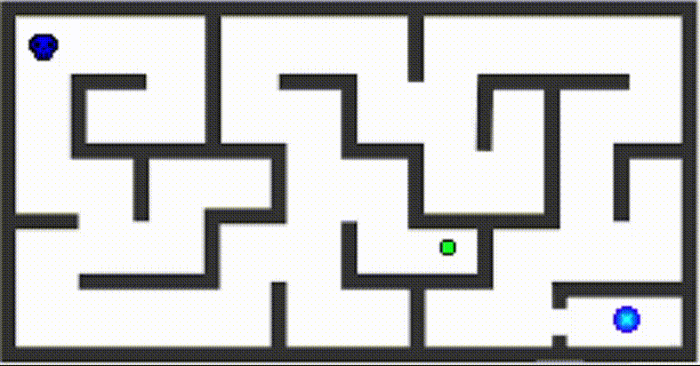
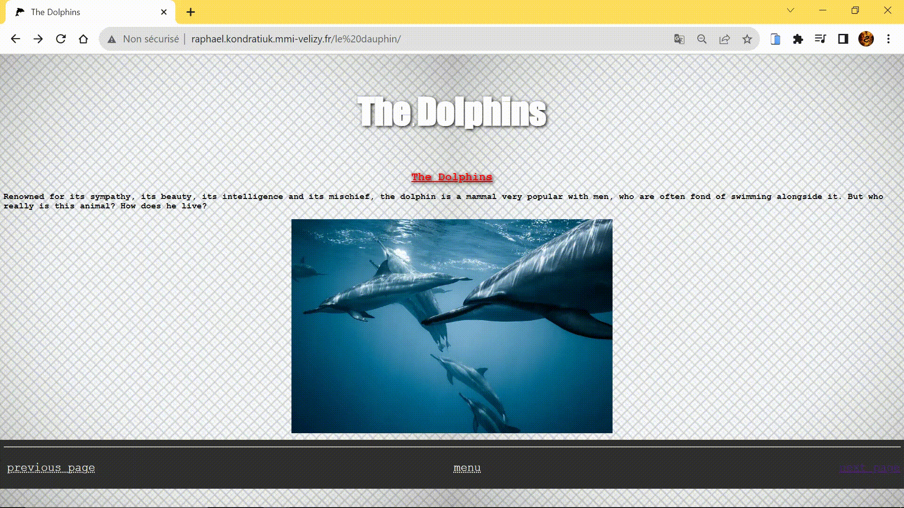

Portfolio
Labyrinth
This project is a small game created in JavaScript: the character moves with the arrows, when he touches the green candy the sprite becomes smaller and green to be able to pass into smaller areas. The blue circle is a portal that leads to level 2. To test the game, simply press the portal. To see the game sprite, press the character's original position
Video
As part of an audiovisual assignment we took a video of a classmate on a green background then I made a montage where I incremented this student in an image given by the teacher
Web site
This project is a website that I created in high school, the project requested by the teacher was to create a website about an animal in html and css. The site had to have several images, a quiz coded in javascript, a table with data and the ability to move from one page to another.